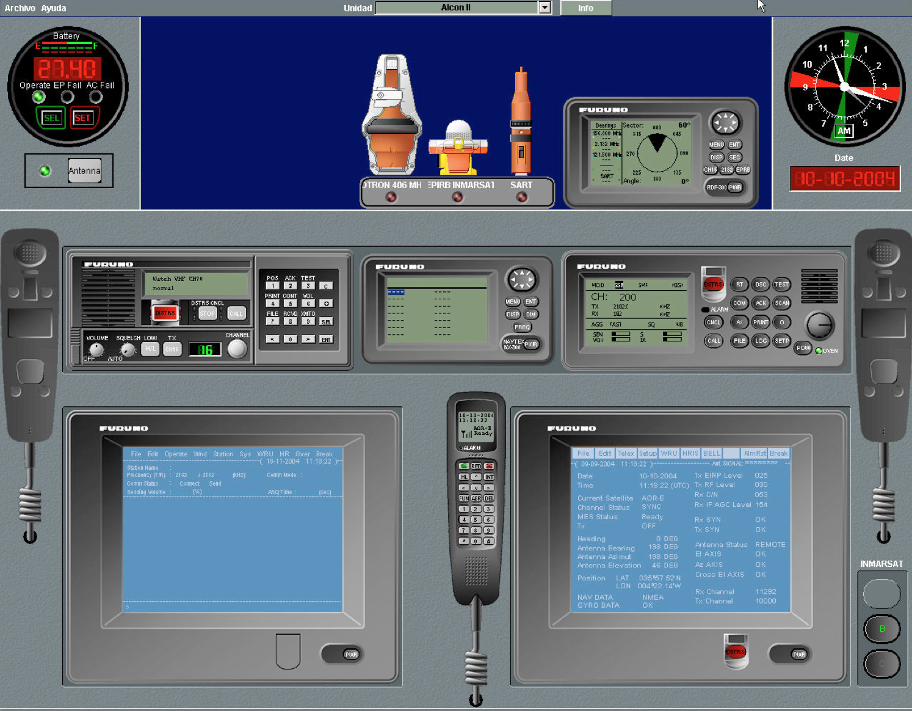

Introducción
El simulador GMDSS es un completo sistema de adiestramiento en Comunicaciones Marítimas, específicamente orientado a que los usuarios se familiaricen y practiquen los procedimientos a seguir en situaciones de socorro, urgencia y seguridad.
Los elementos que lo constituyen permiten la práctica de procedimientos generales de comunicaciones y el conocimiento, desde el punto de vista funcional, de los equipos que normalmente se instalan a bordo de los buques, de acuerdo con los requisitos fijados por la Organización Marítima Internacional en relación con el Sistema Mundial de Socorro y Seguridad Marítimos (GMDSS).

El simulador está constituido por un conjunto de puestos conectados entre sí mediante una red local. Todo ellos están físicamente separados, y pueden comunicarse entre sí como si estuvieran utilizando realmente los diferentes subsistemas, servicios y funciones constitutivos del sistema GMDSS.
Todos los puestos son idénticos en cuanto a la funcionalidad disponible en cada uno de ellos pudiendo ser configurados como puesto de instructor o de alumno. Los operadores que actúen como instructores disponen de toda la funcionalidad del alumno más funcionalidad específica para preparación, ejecución y análisis de ejercicios.
El diseño de los puestos prescinde de cualquier equipo o componente emisor de radiofrecuencia, por lo que es imposible que su utilización provoque interferencias o falsas alarmas en el sistema real GMDSS. Pueden simularse por tanto cuantas situaciones de socorro y emergencia se consideren útiles para los objetivos de enseñanza de diferentes cursos para operadores, con absoluta confianza y sin las restricciones y precauciones que habría que tomar si se utilizaran equipos reales completos con esta finalidad didáctica.
El diseño de las comunicaciones, haciendo uso de tarjetas de sonido para PC y de tecnologías de transmisión de audio por red local, permite integrar los módulos de comunicaciones en las consolas sin necesidad de añadir elementos adicionales.
El simulador ha sido desarrollado según lo estipulado en el Convenio Internacional sobre Normas de Formación, Titulación y Guardia en la Mar STCW-78/95 de la OMI.